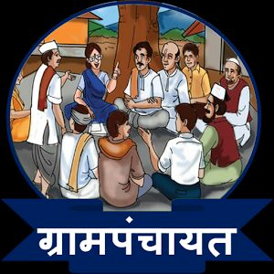
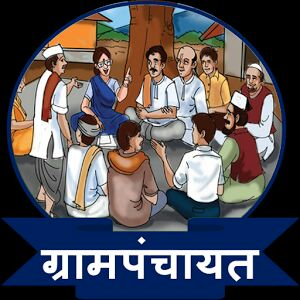

FOLLOW US
Term & Conditions
Contact No. :: 8108816901
E-mail :: atuldubal199@gmail.com


Powered By Atul Dubal
 

खुटबाव माहिती ::
खुटबाव स्थान ::
जवळपास रेल्वे स्थानके ::
जवळील विमानतळ ::
खुटबाव जवळील ठिकाणे ::
FOLLOW US
Term & Conditions
Contact No. :: 8108816901
E-mail :: atuldubal199@gmail.com
Powered By Atul Dubal